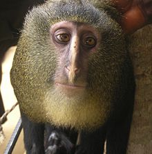

Lesula, un simio muy mono

L A
E L
S U
Este monito fue identificado como una nueva especie en 2012
-
Origen: República Democrática del Congo
-
Especie: Primate Catarrino
-
Familia: Cercopithecidae
Ir a Fundación Mona (http://fundacionmona.org)
Ir al ejercicio terminado